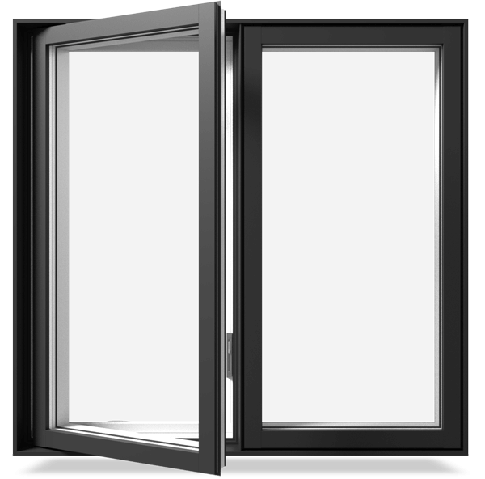
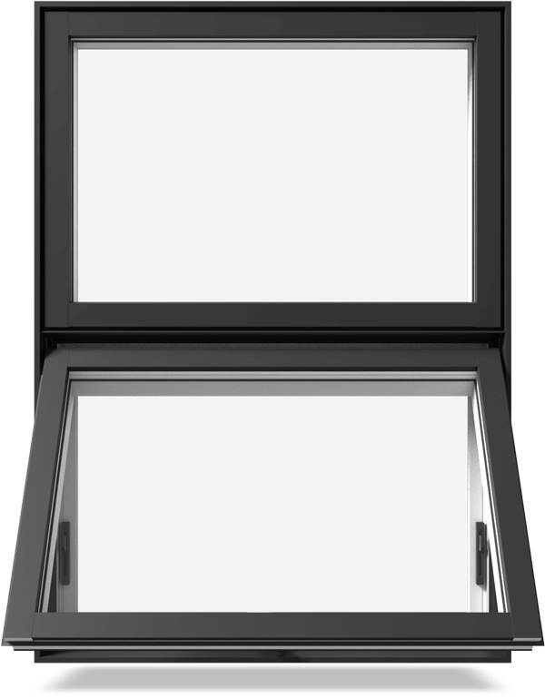
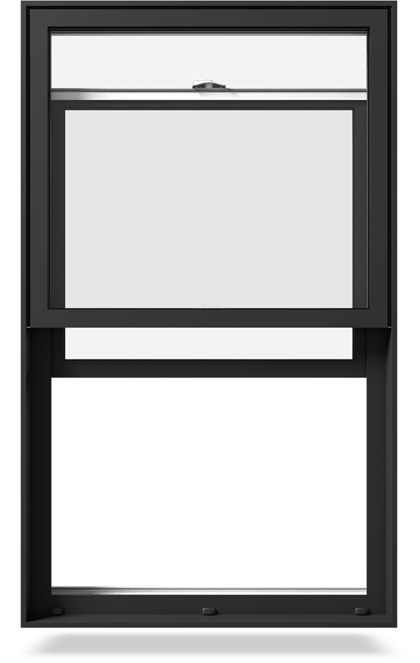
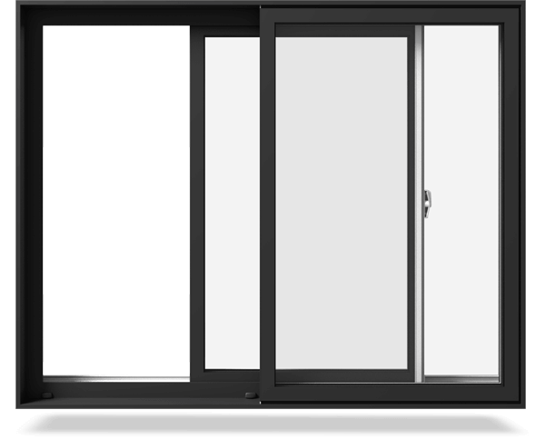
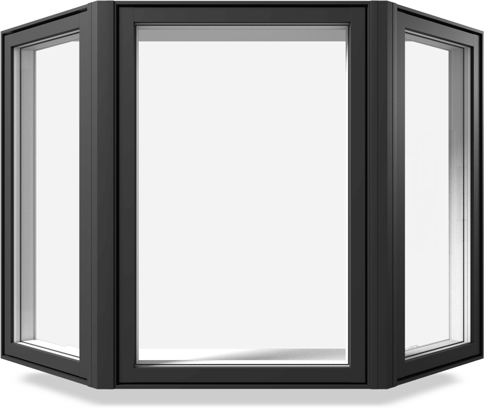
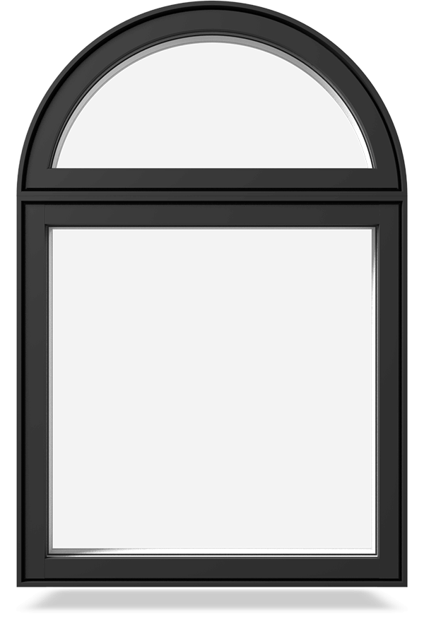

Where there is a wall for others, we see a window...

Casement windows
Casement windows are most energy-efficient and ventilating window style.Casement
window is ideal choice for maximazing rooms view and ventilation.

Awning widnows
They are an excellent choice for above sinks, counters, or doors where opening
requires reach. Awning windows are easy to clean and provide excellent views.

Double-Hung Windows
Double hung windows are by far the most popular. That’s because they are the most
versatile. They feature two separate sashes (the sections that slide up and down),
which allows them to be easily opened to let fresh air in and most can be opened
either by sliding the bottom sash up or the top sash down creating even more
options.They are also well-suited for rooms facing walkways, porches, or patios, as
they do not protrude into the space.

Sliding Windows
Sashes slide open from left to right or vice versa – side to side. Mechanically
speaking, they are double hung windows laid on their sides. They are best for
windows that are wider than they are tall and areas that require a little bit wider
or more unobstructed view.

Bay/Bow windows
Bay windows are larger windows composed of several sections that extend away from
the exterior wall of the home. They are available in many configurations including
three- and four-window styles. The large centre window allows for an uninterrupted
view while the side windows can be casement or double hung to allow for ventilation.
Adding a bay window automatically adds drama and elegance to any room because they
let in lots of light creating a bright, open, airy feeling. Visually speaking, a bay
window makes the room feel larger, and physically speaking it can actually make the
footprint of the room larger because it can extend down to the floor pulling it out
past the line of the exterior wall as well.
Bow windows could be described as bay windows but with one difference,
Bow windows are set of five or more windows when the bay window is only could be up
to 4 windows.

Picture/ Fixed Window
A picture/fixed window features a large single fixed pane of uninterrupted glass.
The main purpose of a picture window is to allow a great view of the outside world.
These windows are usually large and do not open. They are usually installed in
dining rooms and living rooms where homeowners spend leisure time. They allow lots
of natural light, but make sure that your picture window incorporates energy saving
features to keep your energy bills under control.
Special Shape Windows
Arches, circles, hexagonal, octagonal, trapezoid and other specialty shaped windows
can be used alone or combined with traditional shapes to add architectural interest
and unique character to your home. They are usually more expensive than traditional
shapes.